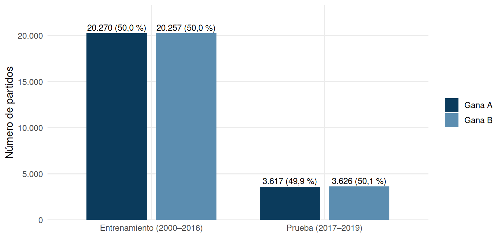
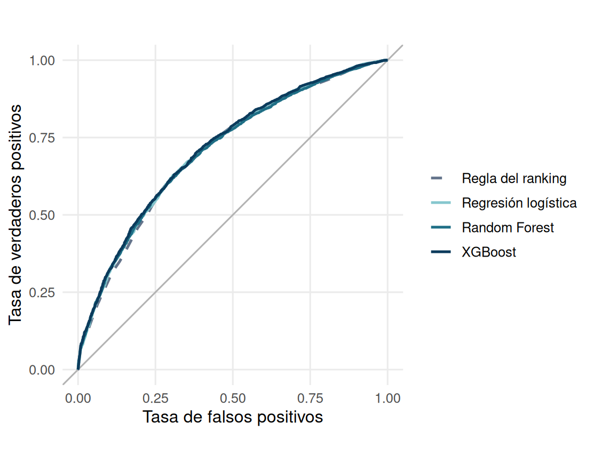
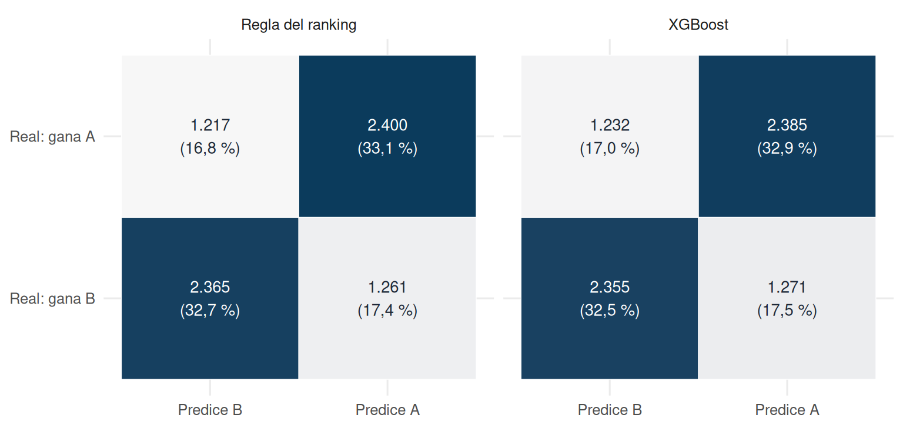
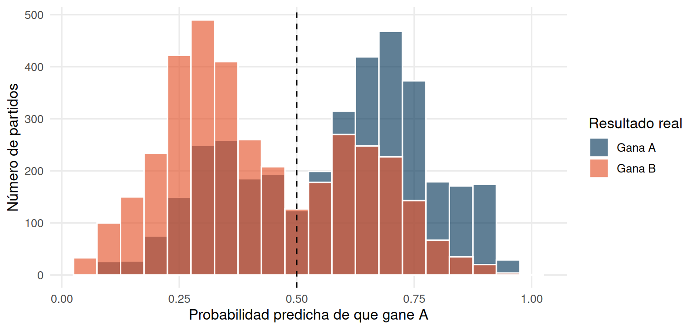
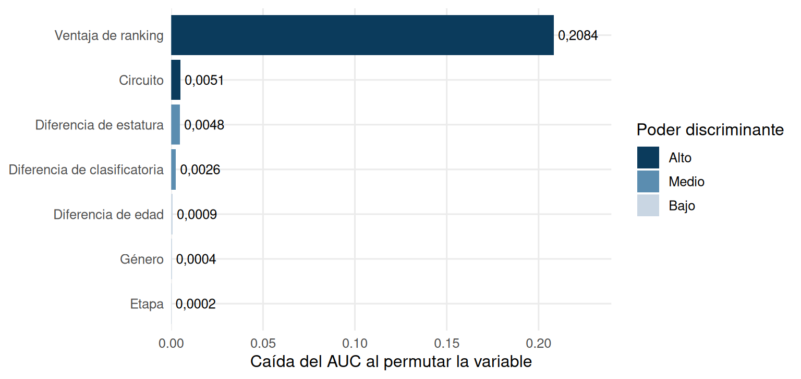

Capítulo 8 Modelado
Este capítulo responde la cuarta pregunta del libro: ¿un modelo que usa solo la información previa al partido predice mejor que la regla del ranking? Es un problema de clasificación supervisada: a partir de lo que se sabe antes de jugar, estimar qué pareja ganará. Los modelos se entrenaron una sola vez en el script entrenar_modelos.R, que guarda sus resultados en modelos_resultados.rds; este capítulo lee ese archivo y muestra las tablas y los gráficos.
8.1 Variable respuesta y partición de los datos
Cada partido se presenta como una pareja A frente a una pareja B, con la regla del capítulo 3: A es la ganadora cuando el match_id es par y la perdedora cuando es impar. La variable respuesta es a_gana, que vale 1 si gana la pareja A. Solo entran los partidos sin forfeit y con ranking, edad y estatura de las dos parejas: 47.770 de los 76.749 partidos del archivo limpio (890 son forfeit).
Los predictores son solo de antes del partido. Son cuatro diferencias A − B (ranking, edad, estatura en centímetros y si cada pareja viene de clasificatoria) y tres variables de contexto (circuito, género y etapa), con AVP, hombres y cuadro eliminatorio como referencias. No se usan kills, aces ni bloqueos para predecir, porque solo se conocen cuando el partido ya terminó. La ventaja de ranking es positiva cuando A está mejor rankeada.
La partición es temporal: los años 2000–2016 entrenan los modelos y 2017–2019 los ponen a prueba, de modo que se evalúan con partidos posteriores a los que vieron. La semilla es 2026.
rr <- res$tab_resp %>%
pivot_longer(c(a_gana, b_gana), names_to = "r", values_to = "n") %>%
mutate(r = ifelse(r == "a_gana", "Gana A", "Gana B")) %>%
group_by(conjunto) %>% mutate(p = n / sum(n)) %>% ungroup()
ggplot(rr, aes(conjunto, n, fill = r)) +
geom_col(position = position_dodge(.8), width = .7) +
geom_text(aes(label = paste0(fmt(n), " (", pct(p), ")")),
position = position_dodge(.8), vjust = -0.4, size = 3.4) +
scale_fill_manual(values = c("Gana A" = "#0B3B5C", "Gana B" = "#5B8DB0")) +
scale_y_continuous(labels = function(x) fmt(x), expand = expansion(mult = c(0, .15))) +
labs(x = NULL, y = "Número de partidos", fill = NULL)
Figura 8.1: Variable respuesta (qué pareja gana) en los conjuntos de entrenamiento y prueba.
res$tab_resp %>%
transmute(Conjunto = conjunto, Partidos = partidos, `Gana A` = a_gana,
`Gana B` = b_gana, `% gana A` = 100 * pct_a) %>%
tabla(caption = "Variable respuesta (`a_gana`) en entrenamiento y prueba.", digits = 1)| Conjunto | Partidos | Gana A | Gana B | % gana A |
|---|---|---|---|---|
| Entrenamiento (2000–2016) | 40.527 | 20.270 | 20.257 | 2.027.000 |
| Prueba (2017–2019) | 7.243 | 3.617 | 3.626 | 361.700 |
Las dos clases están casi equilibradas en ambos conjuntos, así que la exactitud tiene un punto de partida claro: adivinar al azar acierta cerca de la mitad de las veces.
8.2 Hiperparámetros y validación cruzada
Para elegir los hiperparámetros se usó validación cruzada estratificada de 5 pliegues sobre el conjunto de entrenamiento, optimizando el AUC. Se probaron cuatro combinaciones por modelo. Los demás valores quedaron fijos: 200 árboles en el Random Forest, 150 rondas en XGBoost, y submuestreo de filas y columnas de 0,8.
gr <- bind_rows(
tibble(Modelo = "Regresión logística", Parámetros = "Sin hiperparámetros",
`AUC (validación cruzada)` = comp_mod$auc_cv[comp_mod$modelo == "Regresión logística"],
ok = TRUE),
res$grid_rf %>% transmute(Modelo = "Random Forest",
Parámetros = paste0("mtry = ", mtry, "; nodo mínimo = ", min_nodo),
`AUC (validación cruzada)` = auc_cv, ok = auc_cv == max(auc_cv)),
res$grid_xgb %>% transmute(Modelo = "XGBoost",
Parámetros = paste0("profundidad = ", prof, "; eta = ", eta),
`AUC (validación cruzada)` = auc_cv, ok = auc_cv == max(auc_cv))
) %>% mutate(Elegido = ifelse(ok, "sí", "")) %>% select(-ok)
tabla(gr, caption = "Combinaciones de hiperparámetros y AUC de validación cruzada.", digits = 3)| Modelo | Parámetros | AUC (validación cruzada) | Elegido |
|---|---|---|---|
| Regresión logística | Sin hiperparámetros | 0,766 | sí |
| Random Forest | mtry = 2; nodo mínimo = 10 | 0,771 | |
| Random Forest | mtry = 4; nodo mínimo = 10 | 0,752 | |
| Random Forest | mtry = 2; nodo mínimo = 50 | 0,773 | sí |
| Random Forest | mtry = 4; nodo mínimo = 50 | 0,768 | |
| XGBoost | profundidad = 2; eta = 0.05 | 0,772 | |
| XGBoost | profundidad = 4; eta = 0.05 | 0,774 | sí |
| XGBoost | profundidad = 2; eta = 0.1 | 0,772 | |
| XGBoost | profundidad = 4; eta = 0.1 | 0,774 |
8.3 Comparación de los modelos
Los cuatro enfoques se evalúan en la prueba (2017–2019): la regla «gana el mejor rankeado», la regresión logística, el Random Forest y XGBoost. El modelo recomendado es el de mejor AUC en validación cruzada: XGBoost.
comp_mod %>%
transmute(Modelo = modelo, `AUC validación cruzada` = auc_cv, `AUC prueba` = auc_test,
Exactitud = exactitud, F1 = f1) %>%
tabla(caption = "Comparación final de los modelos en el conjunto de prueba (2017–2019).", digits = 3)| Modelo | AUC validación cruzada | AUC prueba | Exactitud | F1 |
|---|---|---|---|---|
| Regla del ranking | — | 0,706 | 0,658 | 0,660 |
| Regresión logística | 0,766 | 0,712 | 0,659 | 0,661 |
| Random Forest | 0,773 | 0,708 | 0,655 | 0,656 |
| XGBoost | 0,774 | 0,715 | 0,654 | 0,656 |
En la prueba, la regla del ranking acierta el 65,8 % de los partidos y tiene un AUC de 0,706. El mejor modelo (XGBoost) llega a un AUC de 0,715 y a una exactitud de 65,4 %. La mejora máxima de cualquier modelo sobre la regla es de 0,009 en AUC y de 0,1 puntos porcentuales en exactitud: ningún modelo le gana de forma útil al ranking.
Los AUC de validación cruzada (entre 0,766 y 0,774) son más altos que los de prueba. Una posible razón es que la prueba corresponde a los años más recientes, en los que el ranking anticipa menos el resultado (capítulo 6); los datos no permiten confirmarlo.
cols_mod <- c("Regla del ranking" = "#64748B", "Regresión logística" = "#86C7CE",
"Random Forest" = "#1F6F86", "XGBoost" = "#0B3B5C")
res$roc %>%
mutate(modelo = factor(modelo, levels = names(cols_mod))) %>%
ggplot(aes(fpr, tpr, color = modelo, linetype = modelo)) +
geom_abline(slope = 1, intercept = 0, color = "grey70") +
geom_line(linewidth = .9) +
scale_color_manual(values = cols_mod) +
scale_linetype_manual(values = c("Regla del ranking" = "dashed", "Regresión logística" = "solid",
"Random Forest" = "solid", "XGBoost" = "solid")) +
coord_equal() +
labs(x = "Tasa de falsos positivos", y = "Tasa de verdaderos positivos",
color = NULL, linetype = NULL)
Figura 8.2: Curvas ROC en el conjunto de prueba (2017–2019). La línea gris es el azar.
Las cuatro curvas casi se superponen: ninguna se separa con claridad de la que dibuja la regla del ranking.
cmat <- bind_rows(mutate(res$conf_regla, modelo = "Regla del ranking"),
mutate(res$conf_mejor, modelo = mejor_nom)) %>%
group_by(modelo) %>% mutate(p = Freq / sum(Freq)) %>% ungroup() %>%
mutate(prediccion = factor(prediccion, levels = c("0", "1"), labels = c("Predice B", "Predice A")),
real = factor(real, levels = c("0", "1"), labels = c("Real: gana B", "Real: gana A")),
modelo = factor(modelo, levels = c("Regla del ranking", mejor_nom)))
ggplot(cmat, aes(prediccion, real, fill = p)) +
geom_tile(color = "white") +
geom_text(aes(label = paste0(fmt(Freq), "\n(", pct(p), ")"), color = p > .3), size = 3.6) +
scale_fill_gradient(low = "#F7F7F7", high = "#0B3B5C", guide = "none") +
scale_color_manual(values = c("TRUE" = "white", "FALSE" = "#1F2937"), guide = "none") +
facet_wrap(~modelo) +
labs(x = NULL, y = NULL)
Figura 8.3: Matriz de confusión en la prueba: regla del ranking frente al mejor modelo.
La regla y el mejor modelo cometen errores casi en las mismas casillas. La diagonal, donde la predicción coincide con el resultado, tiene un peso muy parecido en los dos.
res$prob_mejor %>%
mutate(real = ifelse(a_gana == 1, "Gana A", "Gana B")) %>%
ggplot(aes(p, fill = real)) +
geom_histogram(binwidth = .05, position = "identity", alpha = .65, color = "white") +
geom_vline(xintercept = .5, linetype = "dashed") +
scale_fill_manual(values = c("Gana A" = "#0B3B5C", "Gana B" = "#E4572E")) +
scale_y_continuous(labels = function(x) fmt(x)) +
labs(x = "Probabilidad predicha de que gane A", y = "Número de partidos", fill = "Resultado real")
Figura 8.4: Probabilidad predicha de que gane la pareja A (mejor modelo, prueba), según el resultado real.
Los partidos que gana A tienden a recibir probabilidades más altas y los que gana B, más bajas, pero las dos distribuciones se solapan en buena parte: el modelo separa, no con mucha nitidez.
imp <- tibble(variable = unname(etq_var[names(res$imp)]), valor = unname(res$imp)) %>%
mutate(nivel = cut(rank(-valor), c(0, 2, 4, 7), labels = c("Alto", "Medio", "Bajo")))
top_var <- imp$variable[which.max(imp$valor)]
ggplot(imp, aes(reorder(variable, valor), valor, fill = nivel)) +
geom_col() +
geom_text(aes(label = fmt(valor, 4)), hjust = -0.1, size = 3.4) +
scale_fill_manual(values = c(Alto = "#0B3B5C", Medio = "#5B8DB0", Bajo = "#C9D6E3")) +
scale_y_continuous(expand = expansion(mult = c(0, .15))) +
coord_flip() +
labs(x = NULL, y = "Caída del AUC al permutar la variable", fill = "Poder discriminante")
Figura 8.5: Importancia por permutación en la prueba: caída del AUC al desordenar cada variable.
La variable que más pesa en el mejor modelo es la ventaja de ranking. Las demás aportan muy poco cuando esa ya está en el modelo.
Para el entrenador
- Para anticipar un partido con la información previa, la regla del ranking basta: acierta cerca de 66 % de los partidos, y ningún modelo lo mejora de forma útil.
- Un modelo más complejo no compensa su costo: no se gana nada práctico frente a mirar el ranking de las dos parejas.
- Cerca de 1 de cada 3 partidos no se anticipa con esta información: lo que los decide no está en el archivo (estado de forma, estilo de juego, rival, condiciones del día).
8.4 Razones de odds de la regresión logística
La regresión logística permite leer el aporte de cada variable con las demás fijas. La razón de odds (OR) indica cuánto se multiplican las probabilidades de que gane A cuando la variable sube una unidad. Para las variables numéricas se agrega la OR por una desviación estándar, que permite compararlas entre sí.
orr <- res$or_tab %>%
mutate(Variable = unname(etq_term[termino]),
por_de = exp(coef * unname(res$sds[termino])))
orr %>%
transmute(Variable, `Razón de odds` = or,
`IC 95 %` = paste0(fmt(or_inf, 3), " a ", fmt(or_sup, 3)),
`OR por 1 DE` = por_de, z = z, p = fp8(p)) %>%
tabla(caption = "Regresión logística: razones de odds de que gane la pareja A (entrenamiento 2000–2016).", digits = 3)| Variable | Razón de odds | IC 95 % | OR por 1 DE | z | p |
|---|---|---|---|---|---|
| Ventaja de ranking (por puesto) | 1,089 | 1,086 a 1,092 | 3,079 | 70,284 | < 0,001 |
| Diferencia de edad (por año) | 1,008 | 1,003 a 1,012 | 1,041 | 3,481 | < 0,001 |
| Diferencia de estatura (por cm) | 1,028 | 1,024 a 1,032 | 1,160 | 13,097 | < 0,001 |
| Diferencia de clasificatoria (1 = solo A viene de clasificatoria) | 1,125 | 1,070 a 1,182 | 1,066 | 4,614 | < 0,001 |
| Circuito FIVB (frente a AVP) | 0,994 | 0,945 a 1,046 | — | -0,225 | 0,822 |
| Mujeres (frente a hombres) | 0,989 | 0,947 a 1,033 | — | -0,489 | 0,625 |
| Etapa: clasificatoria (frente a cuadro eliminatorio) | 0,814 | 0,617 a 1,074 | — | -1,453 | 0,146 |
| Etapa: fase de grupos (frente a cuadro eliminatorio) | 1,001 | 0,947 a 1,057 | — | 0,023 | 0,982 |
Cada puesto de ventaja en el ranking multiplica las probabilidades de ganar por 1,089. Cada centímetro de diferencia de estatura media las multiplica por 1,028 y cada año de diferencia de edad, por 1,008. Son asociaciones, no causas.
8.5 Modelo secundario de la AVP: estadísticas de juego
Las estadísticas de juego solo existen para una parte de los partidos y casi todas son de la AVP (capítulo 5). Con ellas se ajustó una regresión logística aparte, sobre las diferencias A − B de los totales de cada pareja, estandarizadas. Este modelo solo explica y no predice: usa estadísticas que se conocen cuando el partido ya terminó.
res$avp_tab %>%
transmute(Estadística = unname(etq_avp[variable]), `OR por 1 DE` = or_1de,
z = z, p = fp8(p)) %>%
tabla(caption = "Modelo secundario de la AVP: razones de odds por una desviación estándar de diferencia entre parejas.", digits = 3)| Estadística | OR por 1 DE | z | p |
|---|---|---|---|
| Kills | 42,746 | 39,363 | < 0,001 |
| Errores de ataque | 0,070 | -36,095 | < 0,001 |
| Aces | 4,155 | 27,228 | < 0,001 |
| Errores de saque | 0,183 | -29,886 | < 0,001 |
| Bloqueos | 1,455 | 7,138 | < 0,001 |
| Defensas (digs) | 1,104 | 1,760 | 0,078 |
El modelo usa 13.056 partidos de la AVP y alcanza un AUC de 0,985, calculado sobre los mismos datos con los que se ajustó. Es mucho más alto que el de los modelos de predicción, sobre todo porque las estadísticas se miden durante el propio partido y ya reflejan quién jugó mejor. La estadística con mayor peso es kills.
Para el entrenador (válido sobre todo para el circuito AVP)
- Las estadísticas de juego explican por qué se gana, pero no sirven para predecir un partido que aún no se ha jugado.
- Úselas para decidir qué entrenar: la tabla muestra qué diferencias entre parejas acompañan más a la victoria.
- Son asociaciones: una pareja que va ganando también acumula más kills y comete menos errores.